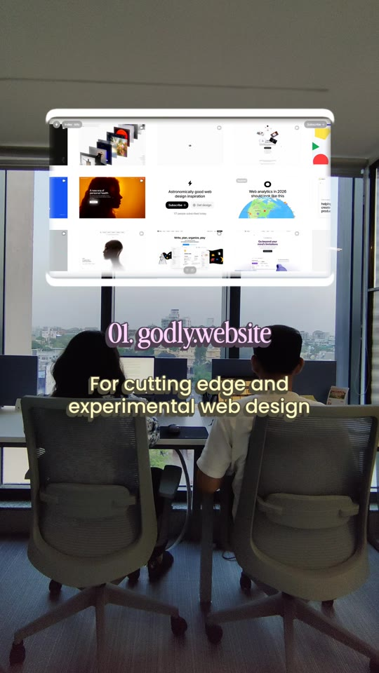
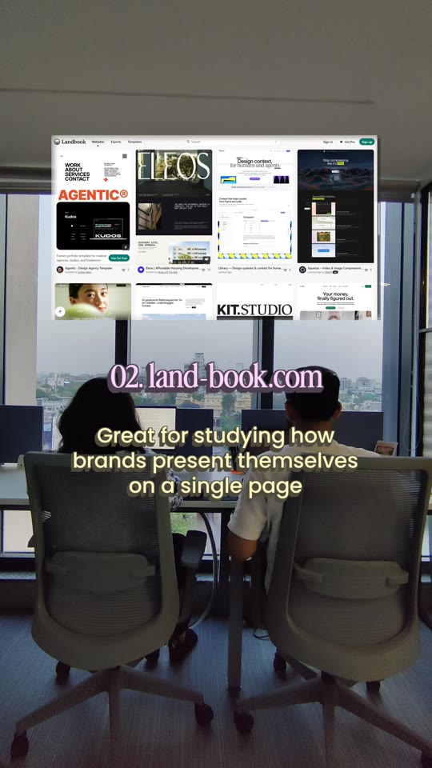
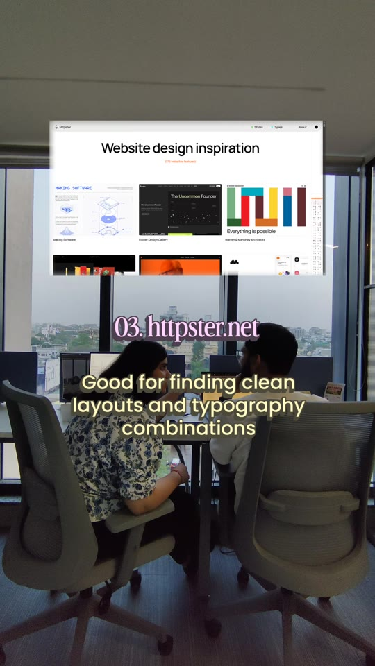
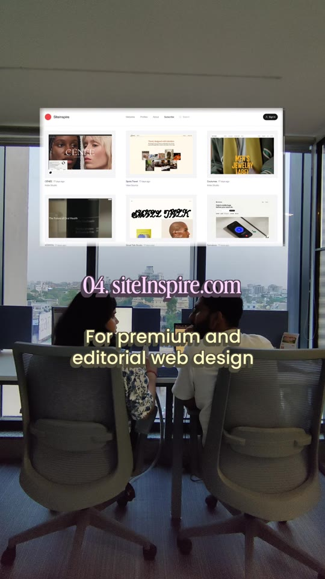

Design · Web-Inspiration
4 Go-To Web Design Inspiration Directories: Godly, Land-book, Httpster & Siteinspire
A curated directory breakdown of four specialized web galleries used by modern product and branding studios to calibrate visual standards and discover non-generic layouts. Segmented by design objective: Godly for experimental micro-interactions and WebGL; Land-book for full-funnel single-page brand narratives; Httpster for typographic contrast and minimal Swiss layouts; and Siteinspire for high-end editorial portfolios.

Directory Breakdown & Specific Use Cases
- 01. Godly (godly.website): Purpose: Cutting-edge and experimental web design. Features live web recordings, high-performance interactions, kinetic typography, WebGL shaders, and dark-mode SaaS interfaces. Ideal for studying fluid motion design, cursor effects, and high-production-value landing pages.
- 02. Land-book (land-book.com): Purpose: Single-page brand storytelling and commercial layouts. Archives complete full-page vertical screenshots of SaaS landing pages, agency portfolios, and consumer product websites. Best used for studying narrative flow, pricing section architectures, and CTA placement.
- 03. Httpster (httpster.net): Purpose: Clean layouts and typography combinations. An editorial archive filtering websites by typographic craftsmanship, asymmetric editorial grids, and minimal brutalist styling without visual clutter.
- 04. Siteinspire (siteinspire.com): Purpose: Premium and editorial web design. A longstanding design showcase categorizing websites by granular navigation patterns, layout structures, and industry verticals. Best for architecture studios, luxury brands, and art publications.
Showcased Platforms



Verbatim Breakdown
| Time / Source | Audio Transcript | On-Screen Display / Text |
|---|---|---|
| 00:00 - 00:05 | (Instrumental audio track — no speech) | Our go to websites for website design inspiration Part 2 |
| 00:06 - 00:09 | (Instrumental music) | 01. godly.website For cutting edge and experimental web design |
| 00:10 - 00:13 | (Instrumental music) | 02. land-book.com Great for studying how brands present themselves on a single page |
| 00:14 - 00:17 | (Instrumental music) | 03. httpster.net Good for finding clean layouts and typography combinations |
| 00:18 - 00:21 | (Instrumental music) | 04. siteinspire.com For premium and editorial web design |
| 00:22 - 00:25 | (Instrumental music) | Good design starts with knowing what good looks like. |
| Caption | — | (caption) We found more websites that were genuinely changing how we think about web design. These are the ones we go to when we need fresh ideas, a higher bar, or just a reminder of what great web design actually looks like. |
Directory Comparison Reference
| Directory | URL | Core Specialty | When to Browse |
|---|---|---|---|
| Godly | godly.website | Experimental, WebGL, Interactive | Brainstorming hero section animations and micro-interactions. |
| Land-book | land-book.com | Full-Page Commercial Landing Pages | Planning SaaS and product page content sections and conversion flows. |
| Httpster | httpster.net | Typographic Contrast & Clean Grids | Selecting headline-to-body font pairings and whitespace systems. |
| Siteinspire | siteinspire.com | Luxury, Culture & Editorial Web | Designing high-end agency, architectural, or lifestyle brand sites. |
Try This
- Before scaffolding a new client website, spend 15 minutes reviewing Godly and Siteinspire to collect 3 moodboard references outside your standard design patterns.
- Use Land-book to audit how competitive SaaS products structure their social proof and pricing tables.
- Cross-reference Httpster when deciding between sans-serif brutalist aesthetics vs classical serif editorial pairings.